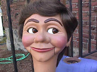

Adding movements
2/23/2009
{kind=link}

Question: I have attached a photo of a Rick Price figure. Just wondering if you take on projects that would involve adding additional movements such as blinkers and raising eyebrows to a completed hard figure that has the basic mouth and eye movement? If so, approximately what would it cost? Thanks, Cal
* * * * * *
Cal: Yes, I do add raising eyebrows to almost any type of figure although the price will vary, depending on the figure. Removing the eyebrows it has (painted or glued on) will requires some repainting to the forehead. I try to limit the repainting to the forehead area if possible. But if I can't obtain a perfect match of paint colors, then the full head has to be repainted which increases the cost. Probably $100 to add raising eyebrows to the figure pictured.I do not add winker blinkers. That requires removing all existing mechanics so winkers can be installed, then reinstalling eyes (and eyebrows). More work than I care to get into at this point in my career although our son, Kevin, might be willing to accept the challenge. He's added winkers to several figures and he does beautiful work. You can email him here; animatedpuppets@charter.net Clinton